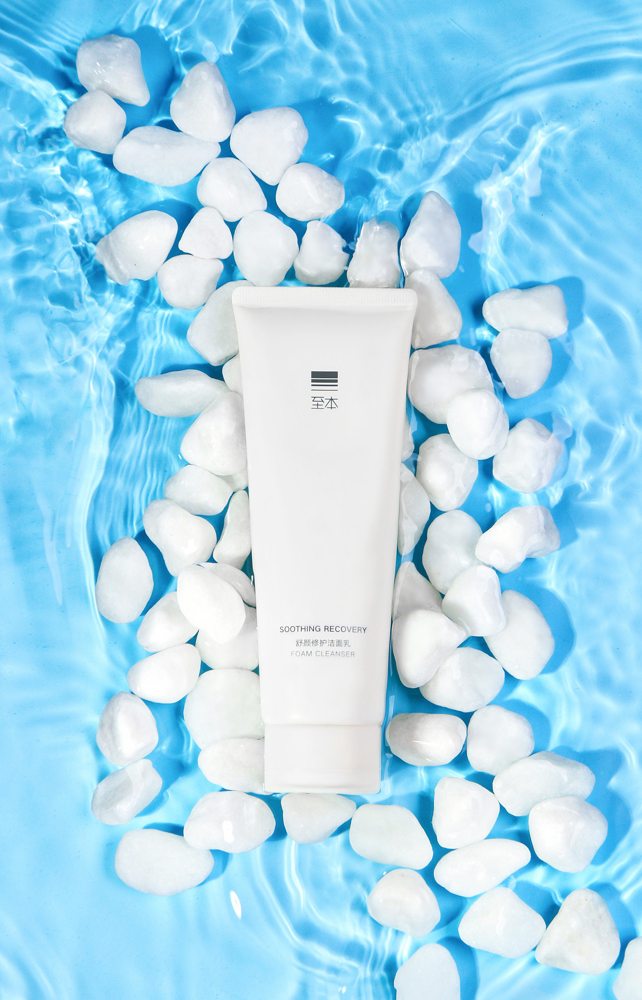
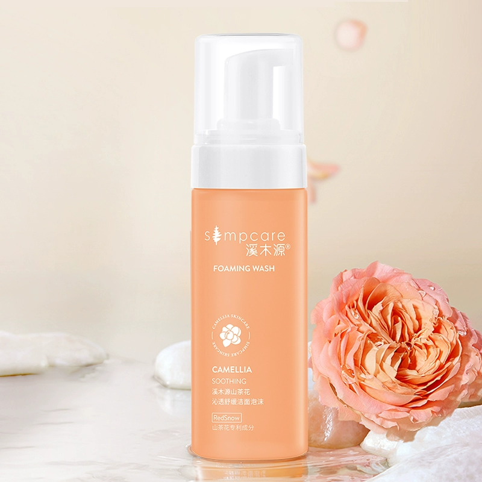
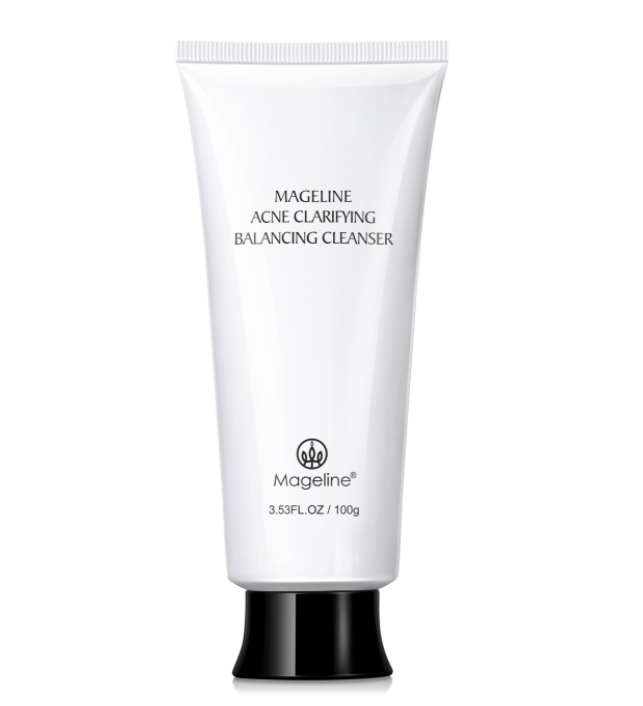

洗面奶

功效
清洁
质地
膏体（质地会根据温度而发生变化）
成分
主要成分为：IGNIAREX®、三叶无患子果提取物、麦芽寡糖葡糖苷
使用方法
使用温水清洗脸庞，取适量产品揉搓起泡后，在面部轻柔打圈使用，眼周稍微带过，按摩30秒左右即可冲洗。早晚使用一次。
官 方 购 买
至本洗面奶·舒颜修护洁面乳
历时两年，独立研发技术萃取桑黄菌而成，帮助减轻肌肤干燥泛红等不适，给予肌肤舒适清洁体验。30℃结晶体系，自然结晶形成膏体，无需使用大量乳化剂及增稠剂，清洁过程温和舒适，触启净肤新体验。

功效
不伤肌肤，泡沫易冲洗，能舒缓洁面不适，减少油脂和皮屑，使毛孔净澈
质地
温和云朵泡，泡沫绵密细腻，洗后清爽不假滑，水润不紧绷
成分
主要成分为：水、甘油、椰油酰甘氨酸钠钾、柠檬酸、月桂酸两性基乙酸钠、月桂酸谷氨酸钠、椰油酰水解蒸麦蛋白钾、山茶花提取物、聚甘油--10 月桂酸酯、丙烯酸酯类共聚物等
使用方法
打开盖子，按压出泡，涂抹表面，轻柔按摩，再冲水清洗。补充袋需与正装容器搭配使用。
官 方 购 买
溪木源洗面奶·山茶花氨基酸慕斯洗面奶
全新升级第四代山茶花系列之一，全新添加Simpcare 1609,含有山茶花修护精华PRO，多维立体保湿系统。全肤质敏肌专研配比【3：4：1科学配比】。

功效
适合各类肌肤，清爽控油，深层洁净，温和水润，收缩毛孔
质地
膏体
成分
主要成分为：北美金缕梅提取物、谷氨酸、水解透明质酸锌、积雪草提取物、苦参根提取物、甘蔗提取物
使用方法
取适量产品，加水揉出泡沫，在脸部轻轻打圈按摩，再以清水洗净。
官 方 购 买
麦吉丽洗面奶·清爽控油面膏
【控油】净毛孔，赶走油痘肌，全新升级，水润不拔干，甄选养肤成分，0添加，更温和。

半亩花田洗面奶·米酿氨基酸泡泡洁面慕斯
一按绵密泡，干净不紧绷，净澈不伤肤，椰子来源，敏肌安心，500g大容量

珀莱雅洗面奶·细致肌密洁面乳霜
一款温和洁面产品，适合各种肤质使用。它含有多种植物精华，能够深层清洁肌肤，同时保持肌肤的水分平衡，使肌肤感觉柔软、滋润。此外，它还具有抗氧化功效，能够帮助抵抗环境污染对肌肤的伤害。使用后，肌肤感觉清爽、舒适，无紧绷感。

欧诗漫洗面奶·欧诗漫美肌洁颜乳
珍珠粉洁面，全新上市，深澈净毛孔，刷新清爽度，不伤肤，洁面洗感不紧绷，不假滑。